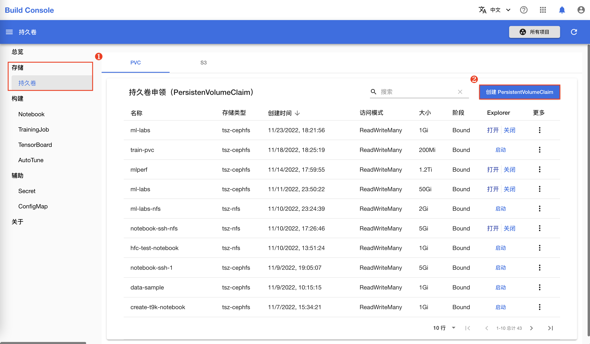
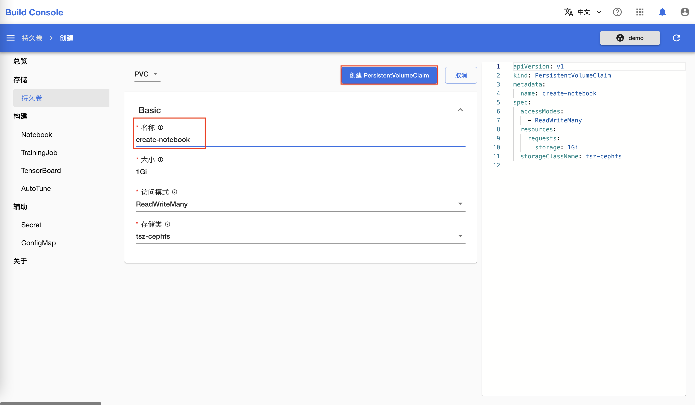
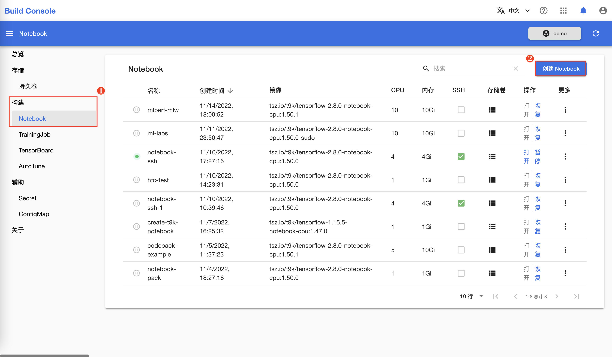
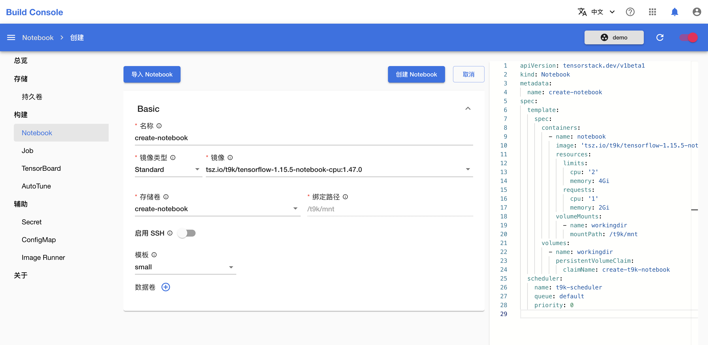
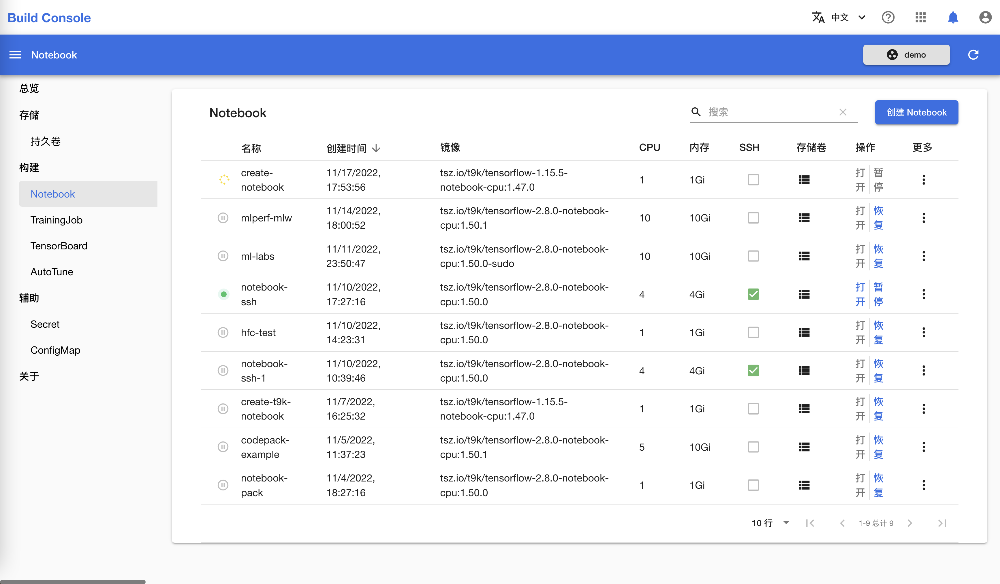
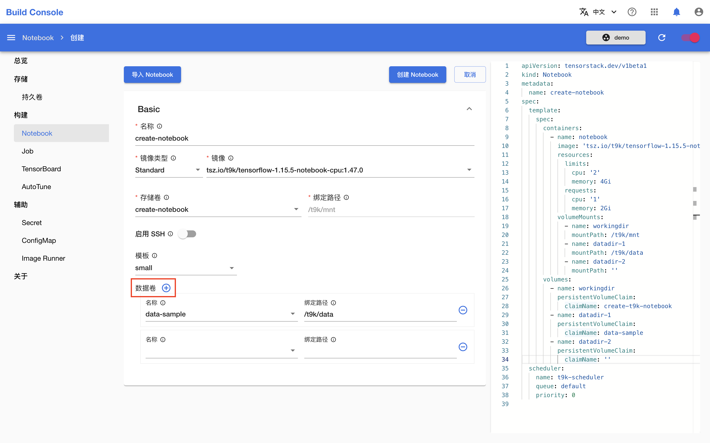
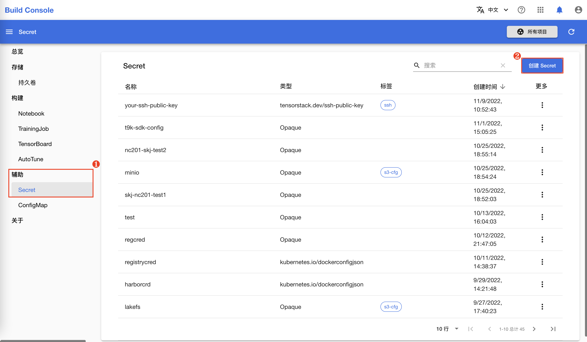
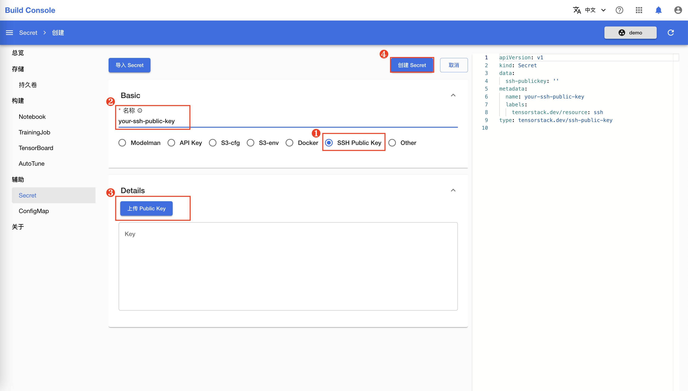
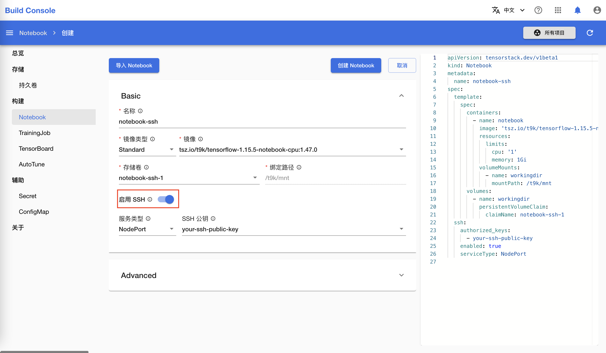

创建 Notebook¶
本教程演示如何创建 Notebook。
创建持久卷申领¶
创建 Notebook 时，需要至少绑定一个持久卷申领来存储代码、数据等文件。如果您的项目中已有合适的持久卷，则可以直接进入下一节。
在模型构建控制台的左侧导航菜单中点击存储 > 持久卷 进入持久卷申领（PersistentVolumeClaim）管理页面。然后点击右上角的创建 PersistentVolumeClaim 进入创建页面：

在持久卷申领创建页面，名称填写 create-notebook，其他参数保持默认值，然后点击创建 PersistentVolumeClaim 进行创建：

创建标准的 Notebook¶
在模型构建控制台的左侧导航菜单中点击构建 > Notebook 进入 Notebook 管理页面，然后点击右上角的创建 Notebook 进入创建页面：

在 Notebook 创建页面，如下填写各个参数：
- 名称填写
create-notebook。 - 存储卷选择上一节创建的
create-notebook（或其他合适的存储卷）。存储卷会被挂载到 Notebook 的/t9k/mnt目录下。 - 镜像根据您想使用的机器学习框架（如 TensorFlow、PyTorch 等）及其版本选择一个标准 Notebook 镜像。
其他参数保持默认值。完成之后，点击创建 Notebook 进行创建。

信息
标准 Notebook 镜像的默认用户是 t9kuser，其主目录（home directory）是 /t9k/mnt。
回到 Notebook 管理页面查看新创建的 Notebook：

如果 Notebook 被分配到的节点中已经有了对应的 Notebook 镜像，那么 Notebook 通常能在 10 秒内运行；否则，可能需要几分钟来拉取镜像。Notebook 运行后，您可以使用 Notebook。
高级功能¶
添加额外的存储卷¶
可以为 Notebook 绑定额外的数据卷。如下图所示：

每绑定一个数据卷需要填写如下参数：
名称：使用的持久卷名称。绑定路径：将持久卷绑定到 Notebook 的指定路径下。
在上图的示例中，我们将持久卷 data-sample 绑定到了 Notebook 的 /t9k/data 路径下。您可以在 Notebook 中通过对应路径访问持久卷中的数据。
启用 SSH 选项¶
如果您想使用 SSH 连接到 Notebook 容器中来管理其中的文件，或者使用本地的 IDE 来编辑 Notebook 中的代码，启用 SSH 能够帮助您在 Notebook 中运行一个 SSH 服务。
存储 SSH 公钥¶
Notebook 的 SSH 服务只允许通过密钥对进行验证，因此您需要上传公钥以使用 SSH 连接。TensorStack AI 平台使用 Secret 存储公钥信息。如果您已经创建了包含公钥的 Secret，则可以直接进入下一节。
在模型构建控制台的左侧导航菜单中点击辅助 > Secret，然后点击右上角的创建 Secret 进入的创建页面：

在 Secret 创建页面，选择类型为 SSH Public Key，填写名称并上传公钥。最后点击创建 Secret 进行创建：
信息
如果您没有生成过密钥对，或者不知道从哪里获取公钥，那么您可以参阅 SSH 文档或者 Windows 文档。

创建支持 SSH 连接的 Notebook¶
创建 Notebook 时，开启启用 SSH，然后填写如下参数：
服务类型：默认值为NodePort，此时 Kubernetes 控制平面会分配一个端口，集群中的每个节点都会将该端口代理到 Notebook 服务中。如果选择ClusterIP，则会在集群内部 IP 上公开服务，您只能从集群内访问该服务。SSH 公钥：用来验证登录者身份，Notebook 的 SSH 服务只允许通过公钥进行身份认证。这里是一个可多选的选择框，请选择您想添加的所有 Secret 后点击网页的其他空白位置。

信息
关于服务类型，详细的说明可以参阅 Kubernetes 官方文档发布服务（服务类型）。
点击创建 Notebook，等待运行之后，您可以通过 SSH 连接远程使用 Notebook。